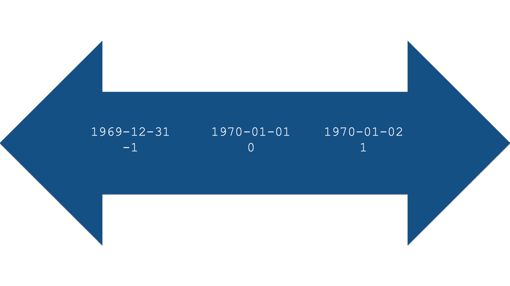

Rows: 10 Columns: 6
── Column specification ────────────────────────────────────────────────────────
Delimiter: ","
chr (4): name_first, name_last, dob_typical, dob_long
dttm (1): dob_actual
date (1): dob_default
ℹ Use `spec()` to retrieve the full column specification for this data.
ℹ Specify the column types or set `show_col_types = FALSE` to quiet this message.28 Working with Dates
In epidemiology, it isn’t uncommon at all for the data we are analyzing to include important date values. Some common examples include date of birth, hospital admission date, date of symptom onset, and follow-up dates in longitudinal studies. In this chapter, we will learn about two new vector types that we can use to work with date and date-time data. Additionally, we will learn about a new package, lubridate, which provides a robust set of functions designed specifically for working with date and date-time data in R.
28.1 Date vector types
In R, there are two different vector types that we can use to store, and work with, dates. They are:
📅 date vectors for working with date values. By default, R will display dates in this format: 4-digit year, a dash, 2-digit month, a dash, and 2-digit day. For example, the date that the University of Florida won its last national football championship, January 8, 2009, looks like this as a date in R: 2009-01-08. It’s about time for another championship!
📅🕓 POSIXct vectors for working with date-time values. Date-time values are just dates with time values added to them. By default, R will display date-times in this format: 4-digit year, a dash, 2-digit month, a dash, 2-digit day, a space, 2-digit hour value, a colon, 2-digit minute value, a colon, and 2-digit second value. So, let’s say that kickoff for the previously mentioned national championship game was at 8:00 PM local time. In R, that looks like this: 2009-01-08 20:00:00.
Note
You were probably pretty confused when you saw the 20:00:00 above if you’ve never used 24-hour clock time (also called military time) before. We’ll let you read the details on Wikipedia, but here’s a couple of simple tips to get you started working with 24-hour time. Any time before noon is written the same as you would write it if you were using 12-hour (AM/PM) time. So, 8:00 AM would be 8:00 in 24-hour time. After noon, just add 12 to whatever time you want to write. So, 1:00 PM is 13:00 (1 + 12 = 13) and 8:00 PM is 20:00 (8 + 12 = 20).
Note
Base R does not have a built-in vector type for working with pure time (as opposed to date-time) values. If you need to work with pure time values only, then the hms package is what you want to try first.
In general, we try to work with date values, rather than date-time values, whenever possible. Working with date-time values is slightly more complicated than working with date values, and we rarely have time data anyway. However, that doesn’t stop some R functions from trying to store dates as POSIXct vectors by default, which can sometimes cause unexpected errors in our R code. But, don’t worry. We are going to show you how to coerce POSIXct vectors to date vectors below.
Before we go any further, let’s go ahead and look at some data that we can use to help us learn to work with dates in R.
# A tibble: 10 × 6
name_first name_last dob_actual dob_default dob_typical dob_long
<chr> <chr> <dttm> <date> <chr> <chr>
1 Nathaniel Watts 1996-03-04 16:59:18 1996-03-04 03/04/1996 March 04, 1…
2 Sophia Gomez 1998-11-21 21:52:08 1998-11-21 11/21/1998 November 21…
3 Emmett Steele 1994-09-03 23:26:19 1994-09-03 09/03/1994 September 0…
4 Levi Sanchez 1996-08-03 17:18:50 1996-08-03 08/03/1996 August 03, …
5 August Murray 1980-06-13 18:27:13 1980-06-13 06/13/1980 June 13, 19…
6 Juan Clark 1996-12-09 05:33:24 1996-12-08 12/08/1996 December 08…
7 Lilly Levy 1992-11-27 17:36:43 1992-11-27 11/27/1992 November 27…
8 Natalie Rogers 1983-04-27 23:31:56 1983-04-27 04/27/1983 April 27, 1…
9 Solomon Harding 1988-06-28 16:13:46 1988-06-28 06/28/1988 June 28, 19…
10 Olivia House 1997-08-02 22:09:50 1997-08-02 08/02/1997 August 02, …👆Here’s what we did above:
we used the
read_csv()function to import a csv file containing simulated data into R.The simulated data contains the first name, last name, and date of birth for 10 fictitious people.
In this data, date of birth is recorded in the four most common formats that we typically come across.
dob_actualis each person’s actual date of birth measured down to the second. Notice that this column’s type is<S3: POSIXct>. Again, that means that this vector contains date-time values. Also, notice that the format of these values matches the format we discussed for date-time vectors above: 4-digit year, a dash, 2-digit month, a dash, 2-digit day, a space, 2-digit hour value, a colon, 2-digit minute value, a colon, and 2-digit second value.dob_defaultis each person’s date of birth without their time of birth included. Notice that this column’s type is<date>. Also, notice that the format of these values matches the format we discussed for date vectors above: 4-digit year, a dash, 2-digit month, a dash, and 2-digit day.dob_typicalis each person’s date of birth written in the format that is probably most often used in the United States: 2-digit month, a forward slash, 2-digit day, a forward slash, and 4-digit year.dob_longis each person’s date of birth written out in a sometimes-used long format. That is, the month name written out, 2-digit day, a comma, and 4-digit year.
Notice that
readrdid a good job of importingdob_actualanddob_defaultas date-time and date values respectively. It did so because the values were stored in the csv file in the default format that R expects to see date-time and date values have.Notice that
readrimporteddob_typicalanddob_longas character strings. It does so because the values in these columns were not stored in a format that R recognizes as a date or date-time.
28.2 Dates under the hood
Under the hood, R actually stores dates as numbers. Specifically, the number of days before or after January 1st, 1970, 00:00:00 UTC.
Note
Why January 1st, 1970, 00:00:00 UTC? Well, it’s not really important to know the answer for the purposes of this book, or for programming in R, but Kristina Hill (a former student) figured out the answer for those of you who are curious. New Year’s Day in 1970 was an easy date for early Unix developers to use as a uniform date for the start of time. So, January 1st, 1970 at 00:00:00 UTC is referred to as the “Unix epoch”, and it’s a popular epoch used by many (but not all) software platforms. The use of any epoch date is mostly arbitrary, and this one leads to some interesting situations (like the Year 2038 Problem and this little issue that Apple had a few years ago (yikes!). Generally speaking, though, this is in no way likely to impact your day-to-day programming in R, or your life at all (unless you happen to also be a software developer in a platform that uses this epoch date).

For example, let’s use base R’s as.Date() function to create a date value from the string “2000-01-01”.
as.Date("2000-01-01")[1] "2000-01-01"On the surface, it doesn’t look like anything happened. However, we can use base R’s unclass() function to see R’s internal integer representation of the date.
unclass(as.Date("2000-01-01"))[1] 10957Specifically, January 1st, 2000 is apparently 10,957 days after January 1st, 1970. What number would you expect to be returned if we used the date “1970-01-01”?
unclass(as.Date("1970-01-01"))[1] 0What number would you expect to be returned if we used the date “1970-01-02”?
unclass(as.Date("1970-01-02"))[1] 1And finally, what number would you expect to be returned if we used the date “1969-12-31”?
unclass(as.Date("1969-12-31"))[1] -1This numeric representation of dates also works in the other direction. For example, we can pass the number 10,958 to the as.Date() function, along with the date origin, and R will return a human-readable date.
as.Date(10958, origin = "1970-01-01")[1] "2000-01-02"You may be wondering why we had to tell R the date origin. After all, didn’t we already say that the origin is January 1st, 1970? Well, not all programs and programming languages use the same date origin. For example, SAS uses the date January 1st, 1960 as its origin. In our experience, this differing origin value can occasionally give us incorrect dates. When that happens, one option is to strip the date value down to its numeric representation, and then tell R what the origin was for that numeric representation in the program you are importing the data from.
For example, if we imported a data set from SAS, we could correctly produce human-readable dates in the manner shown below:
from_sas <- tibble(
date = c(10958, 10959, 10960)
)from_sas %>%
mutate(new_date = as.Date(date, origin = "1960-01-01"))# A tibble: 3 × 2
date new_date
<dbl> <date>
1 10958 1990-01-01
2 10959 1990-01-02
3 10960 1990-01-03Hopefully, you now have a good intuition about how R stores dates under the hood. This numeric representation of dates is what will allow us to perform calculations with dates later in the chapter.
28.3 Coercing date-times to dates
As we said above, it’s usually preferable to work with date values instead of date-time values. Fortunately, converting date-time values to dates is usually really easy. All we need to do is pass those values to the same as.Date() function we already saw above. For example:
birth_dates %>%
mutate(posix_to_date = as.Date(dob_actual)) %>%
select(dob_actual, posix_to_date)# A tibble: 10 × 2
dob_actual posix_to_date
<dttm> <date>
1 1996-03-04 16:59:18 1996-03-04
2 1998-11-21 21:52:08 1998-11-21
3 1994-09-03 23:26:19 1994-09-03
4 1996-08-03 17:18:50 1996-08-03
5 1980-06-13 18:27:13 1980-06-13
6 1996-12-09 05:33:24 1996-12-09
7 1992-11-27 17:36:43 1992-11-27
8 1983-04-27 23:31:56 1983-04-27
9 1988-06-28 16:13:46 1988-06-28
10 1997-08-02 22:09:50 1997-08-02 👆Here’s what we did above:
we created a new column in the
birth_datesdata frame calledposix_to_date.we used the
as.Date()function to coerce the date-time values indob_actualto dates. In other words, we dropped the time part of the date-time. Make sure to capitalize the “D” inas.Date().we used the
select()function to keep only the columns we are interested in comparing side-by-side in our output.Notice that
dob_actual’s column type is still<S3: POSIXct>, butposix_to_date’s column type is<date>.
28.4 Coercing character strings to dates
Converting character strings to dates can be slightly more complicated than converting date-times to dates. This is because we have to explicitly tell R which characters in the character string correspond to each date component. For example, let’s say we have a date value of 04-05-06. Is that April 5th, 2006? Is it April 5th, 1906? Or perhaps it’s May 6th, 2004?
we need to use a series of special symbols to tell R which characters in the character string correspond to each date component. We’ll list some of the most common ones first and then show you how to use them. The examples below assume that date each symbol is being applied to is 2000-01-15.
tribble(
~Symbol, ~Description, ~Example,
"%a", "Abbreviated weekday name", "Sat",
"%A", "Full weekday name", "Saturday",
"%b", "Abbreviated month name", "Jan",
"%B", "Full month name", "January",
"%d", "Day of the month as a number (01–31)", "15",
"%m", "Month as a number", "01",
"%u", "Weekday as a number (1–7, Monday is 1)", "6",
"%U", "Week of the year as a number (00–53) using Sunday as the first day 1 of the week", "02",
"%y", "Year without century (00-99)", "00",
"%Y", "Year with century", "2000"
) %>%
knitr::kable()| Symbol | Description | Example |
|---|---|---|
| %a | Abbreviated weekday name | Sat |
| %A | Full weekday name | Saturday |
| %b | Abbreviated month name | Jan |
| %B | Full month name | January |
| %d | Day of the month as a number (01–31) | 15 |
| %m | Month as a number | 01 |
| %u | Weekday as a number (1–7, Monday is 1) | 6 |
| %U | Week of the year as a number (00–53) using Sunday as the first day 1 of the week | 02 |
| %y | Year without century (00-99) | 00 |
| %Y | Year with century | 2000 |
Now that we have a list of useful symbols that we can use to communicate with R, let’s take another look at our birth date data.
birth_dates# A tibble: 10 × 6
name_first name_last dob_actual dob_default dob_typical dob_long
<chr> <chr> <dttm> <date> <chr> <chr>
1 Nathaniel Watts 1996-03-04 16:59:18 1996-03-04 03/04/1996 March 04, 1…
2 Sophia Gomez 1998-11-21 21:52:08 1998-11-21 11/21/1998 November 21…
3 Emmett Steele 1994-09-03 23:26:19 1994-09-03 09/03/1994 September 0…
4 Levi Sanchez 1996-08-03 17:18:50 1996-08-03 08/03/1996 August 03, …
5 August Murray 1980-06-13 18:27:13 1980-06-13 06/13/1980 June 13, 19…
6 Juan Clark 1996-12-09 05:33:24 1996-12-08 12/08/1996 December 08…
7 Lilly Levy 1992-11-27 17:36:43 1992-11-27 11/27/1992 November 27…
8 Natalie Rogers 1983-04-27 23:31:56 1983-04-27 04/27/1983 April 27, 1…
9 Solomon Harding 1988-06-28 16:13:46 1988-06-28 06/28/1988 June 28, 19…
10 Olivia House 1997-08-02 22:09:50 1997-08-02 08/02/1997 August 02, …For our first example, let’s try converting the character strings stored in the dob_typical to date values. Let’ start by passing the values to as.Date() exactly as we did above and see what happens:
birth_dates %>%
mutate(dob_typical_to_date = as.Date(dob_typical)) %>%
select(dob_typical, dob_typical_to_date)# A tibble: 10 × 2
dob_typical dob_typical_to_date
<chr> <date>
1 03/04/1996 0003-04-19
2 11/21/1998 NA
3 09/03/1994 0009-03-19
4 08/03/1996 0008-03-19
5 06/13/1980 NA
6 12/08/1996 0012-08-19
7 11/27/1992 NA
8 04/27/1983 NA
9 06/28/1988 NA
10 08/02/1997 0008-02-19 This is definitely not the result we wanted, right? Why didn’t it work? Well, R was looking for the values in dob_typical to have the format 4-digit year, a dash, 2-digit month, a dash, and 2-digit day. In reality, dob_typical has the format 2-digit month, a forward slash, 2-digit day, a forward slash, and 4-digit year. Now, all we have to do is tell R how to read this character string as a date using some of the symbols we learned about in the table above.
Let’s try again:
birth_dates %>%
mutate(dob_typical_to_date = as.Date(dob_typical, format = "%m %d %Y")) %>%
select(dob_typical, dob_typical_to_date)# A tibble: 10 × 2
dob_typical dob_typical_to_date
<chr> <date>
1 03/04/1996 NA
2 11/21/1998 NA
3 09/03/1994 NA
4 08/03/1996 NA
5 06/13/1980 NA
6 12/08/1996 NA
7 11/27/1992 NA
8 04/27/1983 NA
9 06/28/1988 NA
10 08/02/1997 NA Wait, what? We told R that the values were 2-digit month (%m), 2-digit day (%d), and 4-digit year (%Y). Why didn’t it work this time? It didn’t work because we didn’t pass the forward slashes to the format argument. Yes, it’s that literal. We even have to tell R that there are symbols mixed in with our date values in the character string we want to convert to a date.
Let’s try one more time:
birth_dates %>%
mutate(dob_typical_to_date = as.Date(dob_typical, format = "%m/%d/%Y")) %>%
select(dob_typical, dob_typical_to_date)# A tibble: 10 × 2
dob_typical dob_typical_to_date
<chr> <date>
1 03/04/1996 1996-03-04
2 11/21/1998 1998-11-21
3 09/03/1994 1994-09-03
4 08/03/1996 1996-08-03
5 06/13/1980 1980-06-13
6 12/08/1996 1996-12-08
7 11/27/1992 1992-11-27
8 04/27/1983 1983-04-27
9 06/28/1988 1988-06-28
10 08/02/1997 1997-08-02 👆Here’s what we did above:
we created a new column in the
birth_datesdata frame calleddob_typical_to_date.we used the
as.Date()function to coerce the character string values indob_typicalto dates.we did so by passing the value
"%m/%d/%Y"to theformatargument of theas.Date()function. These symbols tell R to read the character strings indob_typicalas 2-digit month (%m), a forward slash (/), 2-digit day (%d), a forward slash (/), and 4-digit year (%Y).we used the
select()function to keep only the columns we are interested in comparing side-by-side in our output.Notice that
dob_typical’s column type is still character (<chr>), butdob_typical_to_date’s column type is<date>.
Let’s try one more example, just to make sure we’ve got this down. Take a look at the dob_long column. What value will we need to pass to as.Date()’s format argument in order to convert these character strings to dates?
select(birth_dates, dob_long)# A tibble: 10 × 1
dob_long
<chr>
1 March 04, 1996
2 November 21, 1998
3 September 03, 1994
4 August 03, 1996
5 June 13, 1980
6 December 08, 1996
7 November 27, 1992
8 April 27, 1983
9 June 28, 1988
10 August 02, 1997 Did you figure it out? The solution is below:
birth_dates %>%
mutate(dob_long_to_date = as.Date(dob_long, format = "%B %d, %Y")) %>%
select(dob_long, dob_long_to_date)# A tibble: 10 × 2
dob_long dob_long_to_date
<chr> <date>
1 March 04, 1996 1996-03-04
2 November 21, 1998 1998-11-21
3 September 03, 1994 1994-09-03
4 August 03, 1996 1996-08-03
5 June 13, 1980 1980-06-13
6 December 08, 1996 1996-12-08
7 November 27, 1992 1992-11-27
8 April 27, 1983 1983-04-27
9 June 28, 1988 1988-06-28
10 August 02, 1997 1997-08-02 👆Here’s what we did above:
we created a new column in the
birth_datesdata frame calleddob_long_to_date.we used the
as.Date()function to coerce the character string values indob_longto dates.we did so by passing the value
"%B %d, %Y"to theformatargument of theas.Date()function. These symbols tell R to read the character strings indob_longas full month name (%B), 2-digit day (%d), a comma (,), and 4-digit year (%Y).we used the
select()function to keep only the columns we are interested in comparing side-by-side in our output.Notice that
dob_long’s column type is still character (<chr>), butdob_long_to_date’s column type is<date>.
28.5 Change the appearance of dates with format()
So, far we’ve talked about transforming character strings into dates. However, the reverse is also possible. Meaning, we can transform date values into character strings that we can style (i.e., format) in just about any way you could possibly want to style a date. For example:
birth_dates %>%
mutate(dob_abbreviated = format(dob_actual, "%d %b %y")) %>%
select(dob_actual, dob_abbreviated)# A tibble: 10 × 2
dob_actual dob_abbreviated
<dttm> <chr>
1 1996-03-04 16:59:18 04 Mar 96
2 1998-11-21 21:52:08 21 Nov 98
3 1994-09-03 23:26:19 03 Sep 94
4 1996-08-03 17:18:50 03 Aug 96
5 1980-06-13 18:27:13 13 Jun 80
6 1996-12-09 05:33:24 09 Dec 96
7 1992-11-27 17:36:43 27 Nov 92
8 1983-04-27 23:31:56 27 Apr 83
9 1988-06-28 16:13:46 28 Jun 88
10 1997-08-02 22:09:50 02 Aug 97 👆Here’s what we did above:
we created a new column in the
birth_datesdata frame calleddob_abbreviated.we used the
format()function to coerce the date values indob_actualto character string values indob_abbreviated.we did so by passing the value
"%d %b %y"to the...argument of theformat()function. These symbols tell R to create a character string as 2-digit day (%d), a space (" "), abbreviated month name (%b), a space (" "), and 2-digit year (%y).we used the
select()function to keep only the columns we are interested in comparing side-by-side in our output.Notice that
dob_actual’s column type is still date_time (<S3: POSIXct>), butdob_abbreviated’s column type is character (<chr>). So, whiledob_abbreviatedlooks like a date to us, it is no longer a date value to R. In other words,dob_abbreviateddoesn’t have an integer representation under the hood. It is simply a character string.
28.6 Some useful built-in dates
Base R actually includes a few useful built-in dates that we can use. They can often be useful when doing calculations with dates. Here are a few examples:
28.6.1 Today’s date
Sys.Date()[1] "2025-06-12"lubridate::today()[1] "2025-06-12"These functions can be useful for calculating any length of time up to today. For example, your age today is just the length of time that spans between your birth date and today.
28.6.2 Today’s date-time
Sys.time()[1] "2025-06-12 20:14:23 CDT"lubridate::now()[1] "2025-06-12 20:14:23 CDT"Because these functions also return the current time, they can be useful for timing how long it takes your R code to run. As we’ve said many times, there is typically multiple ways to accomplish a given task in R. Sometimes, the difference between any to ways to accomplish the task is basically just a matter of preference. However, sometimes one way can be much faster than another way. All the examples we’ve seen so far in this book take a trivial amount of time to run – usually less than a second. However, we have written R programs that took several minutes to several hours to complete. For example, complex data simulations and multiple imputation procedures can both take a long time to run. In such cases, we will sometimes check to see if there any significant performance differences between two different approaches to accomplishing the coding task.
As a silly example to show you how this works, let’s generate 1,000,000 random numbers.
set.seed(703)
rand_mill <- rnorm(1000000)Now, let’s find the mean value of those numbers two different ways, and check to see if there is any time difference between the two:
# Save the start time
start <- lubridate::now()
sum <- sum(rand_mill)
length <- length(rand_mill)
mean <- sum / length
mean[1] 0.0009259691# Save the stop time
stop <- lubridate::now()stop - startTime difference of 0.002330065 secsrm(mean)So, finding the mean this way took less than a second. Let’s see how long using the mean() function takes:
# Save the start time
start <- lubridate::now()
mean(rand_mill)[1] 0.0009259691# Save the stop time
stop <- lubridate::now()stop - startTime difference of 0.001876831 secsAlthough both methods above took less than a second to complete the calculations we were interested in, the second method (i.e., using the mean() function) took only about a third as as much time as the first. Again, it obviously doesn’t matter in this scenario, but doing these kinds of checks can be useful when calculations take much longer. For example, that time savings we saw above would be pretty important if we were comparing two methods to accomplish a task where the longer method took an hour to complete and the shorter method took a third as much time (About 20 minutes).
28.6.3 Character vector of full month names
month.name [1] "January" "February" "March" "April" "May" "June"
[7] "July" "August" "September" "October" "November" "December" 28.6.4 Character vector of abbreviated month names
month.abb [1] "Jan" "Feb" "Mar" "Apr" "May" "Jun" "Jul" "Aug" "Sep" "Oct" "Nov" "Dec"month.name and month.abb aren’t functions. They don’t do anything. Rather, they are just saved values that can save us some typing if you happen to be working with data that requires you create variables, or perform calculations, by month.
28.6.5 Creating a vector containing a sequence of dates
In the same way that we can simulate a sequence of numbers using the seq() function, we can simulate a sequence of dates using the seq.Date() function. We sometimes find this function useful for simulating data (including some of the data used in this book), and for filling in missing dates in longitudinal data. For example, we can use the seq.Date() function to return a vector of dates that includes all days between January 1st, 2020 and January 15th, 2020 like this:
seq.Date(
from = as.Date("2020-01-01"),
to = as.Date("2020-01-15"),
by = "days"
) [1] "2020-01-01" "2020-01-02" "2020-01-03" "2020-01-04" "2020-01-05"
[6] "2020-01-06" "2020-01-07" "2020-01-08" "2020-01-09" "2020-01-10"
[11] "2020-01-11" "2020-01-12" "2020-01-13" "2020-01-14" "2020-01-15"28.7 Calculating date intervals
So far, we’ve learned how to create and format dates in R. However, the real value in being able to coerce character strings to date values is that doing so allows us to perform calculations with the dates that we could not perform with the character strings. In our experience, calculating intervals of time between dates is probably the most common type of calculation we will want to perform.
Before we get into some examples, we are going to drop some of the columns from our birth_dates data frame because we won’t need them anymore.
ages <- birth_dates %>%
select(name_first, dob = dob_default) %>%
print()# A tibble: 10 × 2
name_first dob
<chr> <date>
1 Nathaniel 1996-03-04
2 Sophia 1998-11-21
3 Emmett 1994-09-03
4 Levi 1996-08-03
5 August 1980-06-13
6 Juan 1996-12-08
7 Lilly 1992-11-27
8 Natalie 1983-04-27
9 Solomon 1988-06-28
10 Olivia 1997-08-02👆Here’s what we did above:
we created a new data frame called
agesby subsetting thebirth_datesdata frame.we used the
select()function to keep only thename_firstanddob_defaultcolumns frombirth_dates. We used a name-value pair (dob = dob_default) inside theselect()function to renamedob_defaulttodob.
Next, let’s create a variable in our data frame that is equal to today’s date. In reality, this would be a great time to use Sys.Date() to ask R to return today’s date.
ages %>%
mutate(today = Sys.Date())However, we are not going to do that here, because it would cause the value of the today variable to update every time we update the book. That would make it challenging to write about the results we get. So, we’re going to pretend that today is May 7th, 2020. We’ll add that to our data frame like so:
ages <- ages %>%
mutate(today = as.Date("2020-05-07")) %>%
print()# A tibble: 10 × 3
name_first dob today
<chr> <date> <date>
1 Nathaniel 1996-03-04 2020-05-07
2 Sophia 1998-11-21 2020-05-07
3 Emmett 1994-09-03 2020-05-07
4 Levi 1996-08-03 2020-05-07
5 August 1980-06-13 2020-05-07
6 Juan 1996-12-08 2020-05-07
7 Lilly 1992-11-27 2020-05-07
8 Natalie 1983-04-27 2020-05-07
9 Solomon 1988-06-28 2020-05-07
10 Olivia 1997-08-02 2020-05-07👆Here’s what we did above:
we created a new column in the
agesdata frame calledtoday.we made set the value of the
todaycolumn to May 7th, 2020 by passing the value"2020-05-07"to theas.Date()function.
28.7.1 Calculate age as the difference in time between dob and today
Calculating age from date of birth is a pretty common data management task. While you know what ages are, you probably don’t think much about their calculation. Age is just the difference between two points in time. The starting point is always the date of birth. However, because age is constantly changing the end point changes as well. For example, you’re one day older today than you were yesterday. So, to calculate age, we must always have a start date (i.e., date of birth) and an end date. In the example below, our end date will be May 7th, 2020.
Once we have those two pieces of information, we can ask R to calculate age for us in a few different ways. We are going to suggest that you use the method below that uses functions from the lubridate package. We will show you why soon. However, we want to show you the base R way of calculating time intervals for comparison, and because a lot of the help documentation we’ve seen online uses the base R methods shown below.
Let’s go ahead and load the lubridate package now.
library(lubridate)Next, let’s go ahead and calculate age 3 different ways:
ages %>%
mutate(
age_subtraction = today - dob,
age_difftime = difftime(today, dob),
age_lubridate = dob %--% today # lubridate's %--% operator creates a time interval
)# A tibble: 10 × 6
name_first dob today age_subtraction age_difftime
<chr> <date> <date> <drtn> <drtn>
1 Nathaniel 1996-03-04 2020-05-07 8830 days 8830 days
2 Sophia 1998-11-21 2020-05-07 7838 days 7838 days
3 Emmett 1994-09-03 2020-05-07 9378 days 9378 days
4 Levi 1996-08-03 2020-05-07 8678 days 8678 days
5 August 1980-06-13 2020-05-07 14573 days 14573 days
6 Juan 1996-12-08 2020-05-07 8551 days 8551 days
7 Lilly 1992-11-27 2020-05-07 10023 days 10023 days
8 Natalie 1983-04-27 2020-05-07 13525 days 13525 days
9 Solomon 1988-06-28 2020-05-07 11636 days 11636 days
10 Olivia 1997-08-02 2020-05-07 8314 days 8314 days
# ℹ 1 more variable: age_lubridate <Interval>👆Here’s what we did above:
we created three new columns in the
agesdata frame calledage_subtraction,age_difftime, andage_lubridate.we created
age_subtractionusing the subtraction operator (-). Remember, R stores dates values as numbers under the hood. So, we literally just asked R to subtract the value fordobfrom the value fortoday. The value returned to us was a vector of time differences measured in days.we created
age_difftimebase R’sdifftime()function. The value returned to us was a vector of time differences measured in days. As you can see, the results returned bytoday - dobanddifftime(today, dob)are identical.we created
age_lubridateusinglubridate’s time interval operator (%--%). Notice that the order ofdobandtodayare switched here compared to the previous two methods. By itself, the%--%operator doesn’t return a time difference value. It returns a time interval value.
Here is how we can convert the time difference and time interval values to age in years:
ages %>%
mutate(
age_subtraction = as.numeric(today - dob) / 365.25,
age_difftime = as.numeric(difftime(today, dob)) / 365.25,
age_lubridate = (dob %--% today) / years(1)
)# A tibble: 10 × 6
name_first dob today age_subtraction age_difftime age_lubridate
<chr> <date> <date> <dbl> <dbl> <dbl>
1 Nathaniel 1996-03-04 2020-05-07 24.2 24.2 24.2
2 Sophia 1998-11-21 2020-05-07 21.5 21.5 21.5
3 Emmett 1994-09-03 2020-05-07 25.7 25.7 25.7
4 Levi 1996-08-03 2020-05-07 23.8 23.8 23.8
5 August 1980-06-13 2020-05-07 39.9 39.9 39.9
6 Juan 1996-12-08 2020-05-07 23.4 23.4 23.4
7 Lilly 1992-11-27 2020-05-07 27.4 27.4 27.4
8 Natalie 1983-04-27 2020-05-07 37.0 37.0 37.0
9 Solomon 1988-06-28 2020-05-07 31.9 31.9 31.9
10 Olivia 1997-08-02 2020-05-07 22.8 22.8 22.8👆Here’s what we did above:
we created three new columns in the
agesdata frame calledage_subtraction,age_difftime, andage_lubridate.we used the
as.numeric()function to convert the values ofage_subtractionfrom a time differences to a number – the number of days. We then divided the number of days by 365.25 – roughly the number of days in a year. The result is age in years.we used the
as.numeric()function to convert the values ofage_difftimefrom a time differences to a number – the number of days. We then divided the number of days by 365.25 – roughly the number of days in a year. The result is age in years.Again, the results of the first two methods are identical.
we asked R to show us the time interval values we created
age_lubridateusinglubridate’s time interval operator (%--%) as years of time. We did so by dividing the time interval into years. Specifically, we used the division operator (/) andlubridate’syears()function. The value we passed to theyears()function was1. In other words, we asked R to tell us how many 1-year periods are in each time interval we created withdob %--% today.In case you’re wondering, here’s the value returned by the
years()function alone:
years(1)[1] "1y 0m 0d 0H 0M 0S"So, why did the results of the first two methods differ from the results of the third method? Well, dates are much more complicated to work with than they may seem on the surface. Specifically, each day doesn’t have exactly 24 hours and each year doesn’t have exactly 365 days. Some have more and some have less – so called, leap years. You can find more details on the lubridate website, but the short answer is that lubridate’s method gives us a more precise answer than the first two methods do because it accounts for date complexities in a different way.
Here’s an example to quickly illustrate what we mean:
Say we want to calculate the number of years between “2017-03-01” and “2018-03-01”.
start <- as.Date("2017-03-01")
end <- as.Date("2018-03-01")The most meaningful result in this situation is obviously 1 year.
# The base R way
as.numeric(difftime(end, start)) / 365.25[1] 0.9993155# The lubridate way
(start %--% end) / years(1)[1] 1Notice that lubridate’s method returns exactly one year, but the base R method returns an approximation of a year.
To further illustrate this point, let’s look at what happens when the time interval includes a leap year. The year 2020 is a leap year, so let’s calculate the number of years between “2019-03-01” and “2020-03-01”. Again, a meaningful result here should be a year.
start <- as.Date("2019-03-01")
end <- as.Date("2020-03-01")# The base R way
as.numeric(difftime(end, start)) / 36[1] 10.16667# The lubridate way
(start %--% end) / years(1)[1] 1Notice that lubridate’s method returns exactly one year, but the base R method returns an approximation of a year.
To further illustrate this point, let’s look at what happens when the time interval includes a leap year. The year 2020 is a leap year, so let’s calculate the number of years between “2019-03-01” and “2020-03-01”. Again, a meaningful result here should be a year.
start <- as.Date("2019-03-01")
end <- as.Date("2020-03-01")# The base R way
as.numeric(difftime(end, start)) / 365.25[1] 1.002053# The lubridate way
(start %--% end) / years(1)[1] 1Once again, the lubridate method returns exactly one year, while the base R method returns an approximation of a year.
28.7.2 Rounding time intervals
Okay, so now we know how to get age in years, and hopefully I convinced you that using functions from the lubridate package can help us do so in the most precise way possible. However, in most situations we would want to take our calculations one step further and round to whole years. There are actually a couple different ways to do so. For example:
ages %>%
mutate(
age_years = (dob %--% today) / years(1),
# If you want the age (in years) as of the person's last birthday
age_last = trunc(age_years),
# If you want to round the age to the nearest year
age_near = round(age_years)
)# A tibble: 10 × 6
name_first dob today age_years age_last age_near
<chr> <date> <date> <dbl> <dbl> <dbl>
1 Nathaniel 1996-03-04 2020-05-07 24.2 24 24
2 Sophia 1998-11-21 2020-05-07 21.5 21 21
3 Emmett 1994-09-03 2020-05-07 25.7 25 26
4 Levi 1996-08-03 2020-05-07 23.8 23 24
5 August 1980-06-13 2020-05-07 39.9 39 40
6 Juan 1996-12-08 2020-05-07 23.4 23 23
7 Lilly 1992-11-27 2020-05-07 27.4 27 27
8 Natalie 1983-04-27 2020-05-07 37.0 37 37
9 Solomon 1988-06-28 2020-05-07 31.9 31 32
10 Olivia 1997-08-02 2020-05-07 22.8 22 23👆Here’s what we did above:
We created two new columns in the
agesdata frame calledage_last, andage_near.We created
age_lastusing thetrunc()(for truncate) function. The value returned by thetrunc()function can be interpreted as each person’s age in years at their last birthday.We created
age_nearusing theround()function. The value returned by theround()function can be interpreted as each person’s age in years at their nearest birthday – which may not have occurred yet. This is probably not the value that you will typically be looking for. So, just make sure you choose the correct function for the type of rounding you want to do.
As a shortcut, we can use the integer division operator (%/%) to calculate each person’s age in years at their nearest birthday without the trunc() function.
ages %>%
mutate(
# If you want the age (in years) as of the person's last birthday
age_years = (dob %--% today) %/% years(1)
)# A tibble: 10 × 4
name_first dob today age_years
<chr> <date> <date> <dbl>
1 Nathaniel 1996-03-04 2020-05-07 24
2 Sophia 1998-11-21 2020-05-07 21
3 Emmett 1994-09-03 2020-05-07 25
4 Levi 1996-08-03 2020-05-07 23
5 August 1980-06-13 2020-05-07 39
6 Juan 1996-12-08 2020-05-07 23
7 Lilly 1992-11-27 2020-05-07 27
8 Natalie 1983-04-27 2020-05-07 37
9 Solomon 1988-06-28 2020-05-07 31
10 Olivia 1997-08-02 2020-05-07 2228.8 Extracting out date parts
Sometimes it can be useful to store parts of a date in separate columns. For example, it is common to break date values up into their component parts when linking records across multiple data frames. We will learn how to link data frames a little later in the book. For now, we’re just going to learn how separate dates into their component parts.
We won’t need the today column anymore, so I’ll go ahead a drop it here.
ages <- ages %>%
select(-today) %>%
print()# A tibble: 10 × 2
name_first dob
<chr> <date>
1 Nathaniel 1996-03-04
2 Sophia 1998-11-21
3 Emmett 1994-09-03
4 Levi 1996-08-03
5 August 1980-06-13
6 Juan 1996-12-08
7 Lilly 1992-11-27
8 Natalie 1983-04-27
9 Solomon 1988-06-28
10 Olivia 1997-08-02Typically, separating the date will include creating separate columns for the day, the month, and the year. Fortunately, lubridate includes intuitively named functions that make this really easy:
ages %>%
mutate(
day = day(dob),
month = month(dob),
year = year(dob)
)# A tibble: 10 × 5
name_first dob day month year
<chr> <date> <int> <dbl> <dbl>
1 Nathaniel 1996-03-04 4 3 1996
2 Sophia 1998-11-21 21 11 1998
3 Emmett 1994-09-03 3 9 1994
4 Levi 1996-08-03 3 8 1996
5 August 1980-06-13 13 6 1980
6 Juan 1996-12-08 8 12 1996
7 Lilly 1992-11-27 27 11 1992
8 Natalie 1983-04-27 27 4 1983
9 Solomon 1988-06-28 28 6 1988
10 Olivia 1997-08-02 2 8 1997👆Here’s what we did above:
- We created three new columns in the
agesdata frame calledday,month, andyear. We created them by passing thedobcolumn to thexargument oflubridate’sday(),month(), andyear()functions respectively.
lubridate also includes functions for extracting other information from date values. For example:
ages %>%
mutate(
wday = wday(dob),
day_full = wday(dob, label = TRUE, abbr = FALSE),
day_abb = wday(dob, label = TRUE, abbr = TRUE),
week_of_year = week(dob),
week_cdc = epiweek(dob)
)# A tibble: 10 × 7
name_first dob wday day_full day_abb week_of_year week_cdc
<chr> <date> <dbl> <ord> <ord> <dbl> <dbl>
1 Nathaniel 1996-03-04 2 Monday Mon 10 10
2 Sophia 1998-11-21 7 Saturday Sat 47 46
3 Emmett 1994-09-03 7 Saturday Sat 36 35
4 Levi 1996-08-03 7 Saturday Sat 31 31
5 August 1980-06-13 6 Friday Fri 24 24
6 Juan 1996-12-08 1 Sunday Sun 49 50
7 Lilly 1992-11-27 6 Friday Fri 48 48
8 Natalie 1983-04-27 4 Wednesday Wed 17 17
9 Solomon 1988-06-28 3 Tuesday Tue 26 26
10 Olivia 1997-08-02 7 Saturday Sat 31 31👆Here’s what we did above:
We created five new columns in the
agesdata frame calledwday,day_abb,day_full,week_of_year, andweek_cdc. We created them by passing thedobcolumn to thexargument oflubridate’swday(),week(), andepiweek()functions respectively.The
wday()function returns the day of the week the given date falls on. By default, thewday()returns an integer value between 1 and 7. We can adjust the values passed towday()’slabelandabbrarguments to return full day names (day_full) and abbreviated day names (day_abb).The
week()function returns the week of the year the given date falls in. More formally, theweek()function “returns the number of complete seven-day periods that have occurred between the date and January 1st, plus one.” You can see this information by typing?weekin your console.The
epiweek()function also returns the week of the year the given date falls in. However, it calculates the week in a slightly different way. Specifically, “it uses the US CDC version of epidemiological week. It follows same rules as isoweek() but starts on Sunday. In other parts of the world the convention is to start epidemiological weeks on Monday, which is the same as isoweek.” Again, you can see this information by typing?weekin your console.
28.9 Sorting dates
Another really common thing we might want to do with date values is sort them chronologically. Fortunately, this is really easy to do with dplyr’s arrange() function. If we want to sort our dates in ascending order (i.e., oldest to most recent), we just pass the date column to the ... argument of the arrange() function like so:
# Oldest (top) to most recent (bottom)
# Ascending order
ages %>%
arrange(dob)# A tibble: 10 × 2
name_first dob
<chr> <date>
1 August 1980-06-13
2 Natalie 1983-04-27
3 Solomon 1988-06-28
4 Lilly 1992-11-27
5 Emmett 1994-09-03
6 Nathaniel 1996-03-04
7 Levi 1996-08-03
8 Juan 1996-12-08
9 Olivia 1997-08-02
10 Sophia 1998-11-21If we want to sort our dates in descending order (i.e., most recent to oldest), we just pass the date column to the desc() function before passing it to the ... argument of the arrange() function.
# Most recent (top) to oldest (bottom)
# Descending order
ages %>%
arrange(desc(dob))# A tibble: 10 × 2
name_first dob
<chr> <date>
1 Sophia 1998-11-21
2 Olivia 1997-08-02
3 Juan 1996-12-08
4 Levi 1996-08-03
5 Nathaniel 1996-03-04
6 Emmett 1994-09-03
7 Lilly 1992-11-27
8 Solomon 1988-06-28
9 Natalie 1983-04-27
10 August 1980-06-13Much of the data we work with in epidemiology includes dates. In fact, it isn’t uncommon for the length of time that passes between to events to be the primary outcome that we are trying to understand. Hopefully, the tools we’ve learned in this chapter will give you a solid foundation for working with dates in R. For more information on dates, including a handy cheat sheet, I recommend visiting the lubridate website.